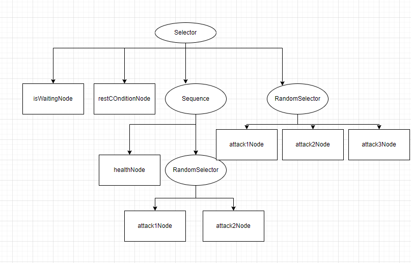
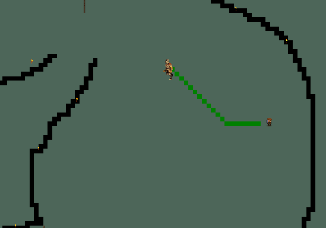
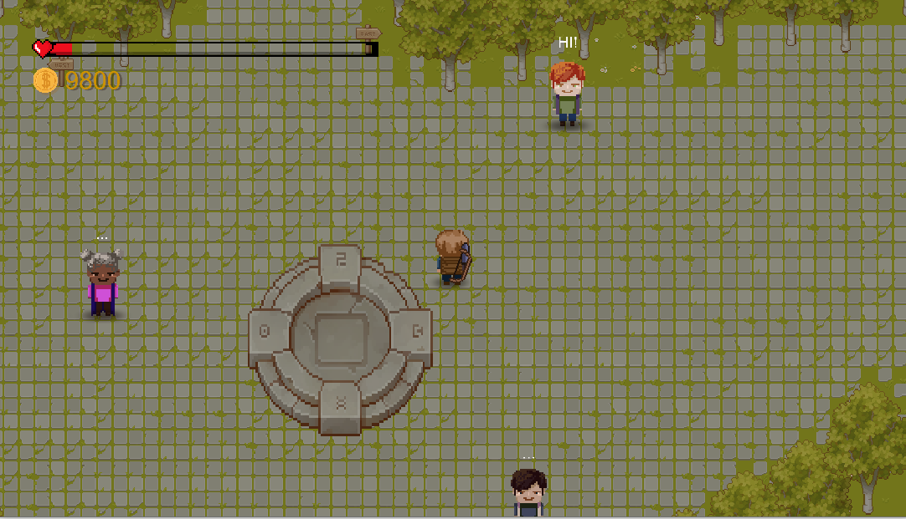
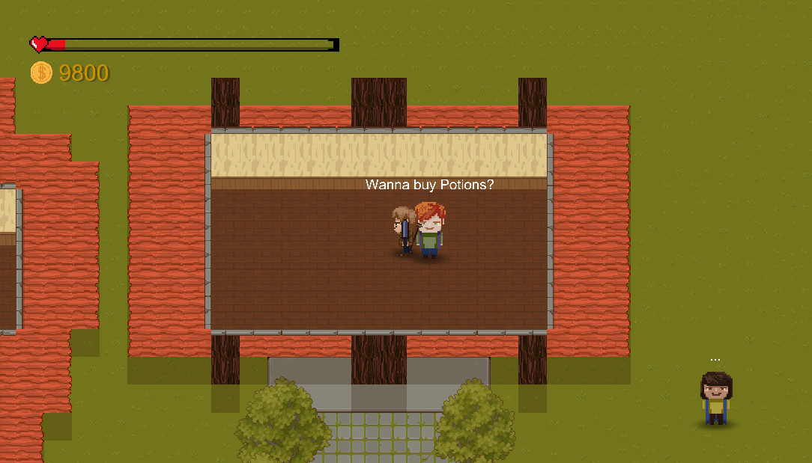
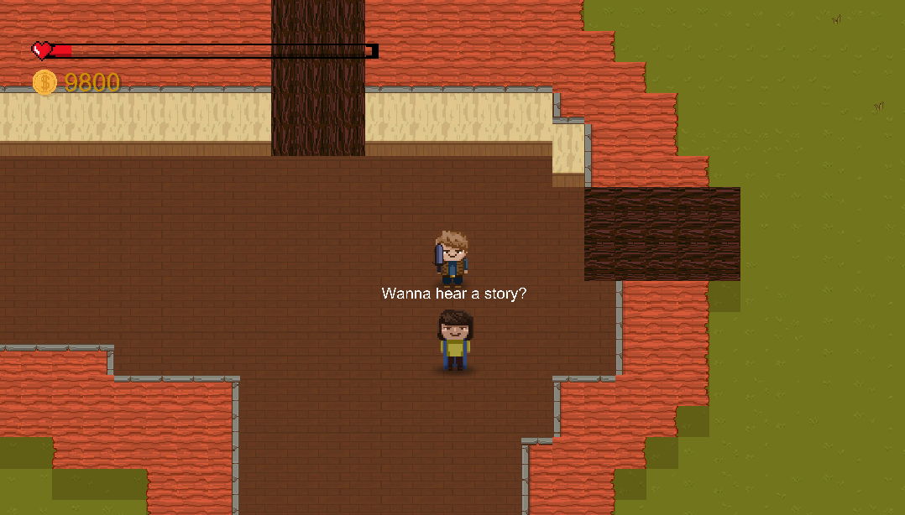
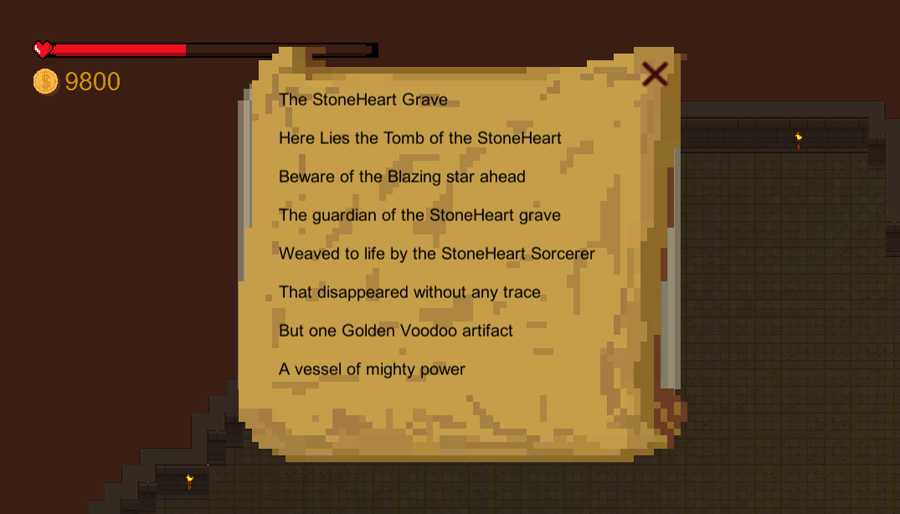
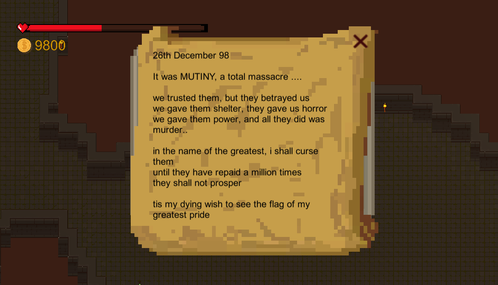
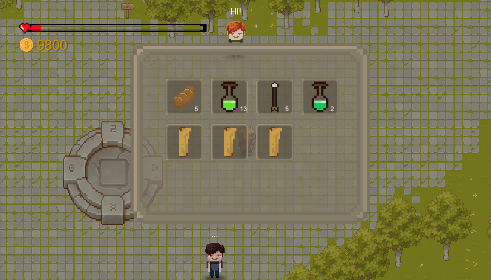
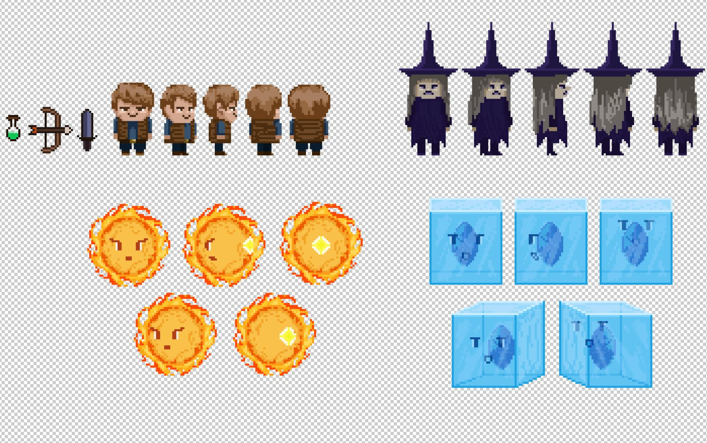

Inspired by many souls games, my teammate and I have decided to create a 2D top down souls-like game called Dungeon Slayer using Unity game engine for a game programming course project.
Main features:
1. Combact focused
2. Behavioural Tree Enemy AI
3. A* Pathfinding AI
4. Pixel Artstyle
My Responsibility:
1. Construction of AI (Behavioural Tree and A* Pathfinding)
Behavioural Tree:

the reason why we chose Behavioural Tree as opposed to other AI techniques likes Finite
State Machine, is that Behavioural Tree grant us the flexibility to create more complex and
customized enemy AI in a more simple way.
A* Pathfinding:

A* is a Pathfinding algorithm that takes into consideration the distance between the target and the object and the heuristics.
the reason why we chose this is that it is simple to implement and the effect is very good
2. World Building
to make a world that is believable and immersive, we have designed some NPCs and game lores that
will help players immerse themselves into the game





3. Inventory and item system
inventory is an important part of the game where players get to interact with items.

for items, we've made potions, breads, scrolls, arrows etc.
4. Sound effects
not only is sound effects are there for creating drama, it is also important for context ques.
for example, clicking, closing, hitting etc., all have a sound effect associated to it. Besides, we have
also added some ambient sounds like villages, animals, caves, dungeons etc for immersion.
5. drawing the texture (characters and items)
To create unique characters and enemies, we decided to draw them ourselves
